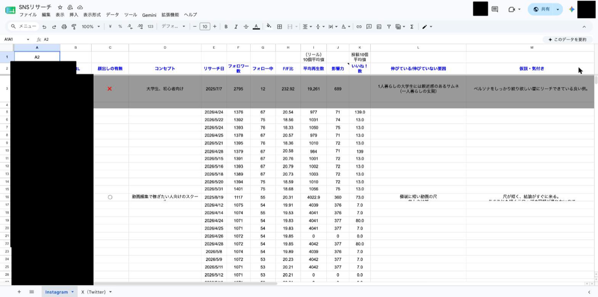
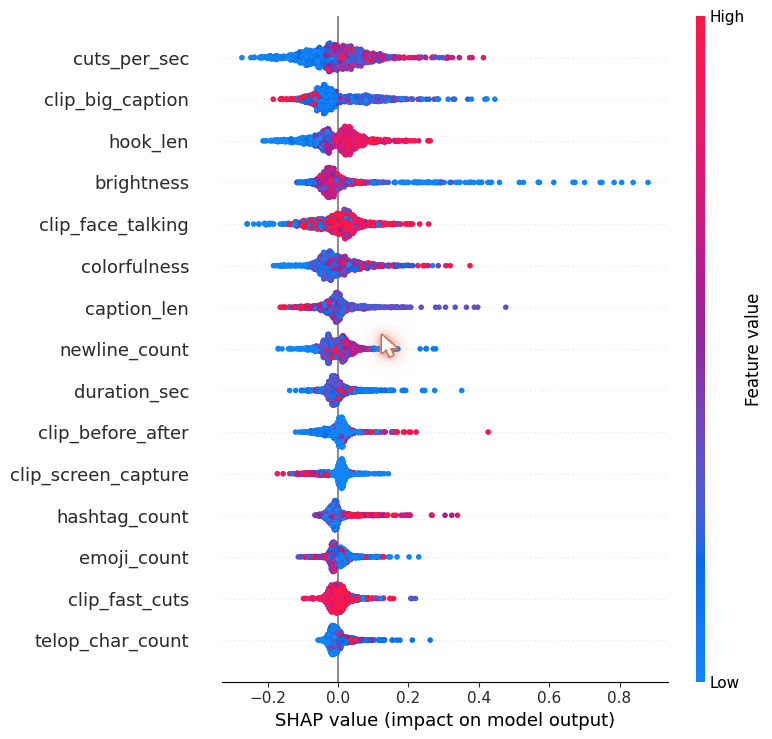
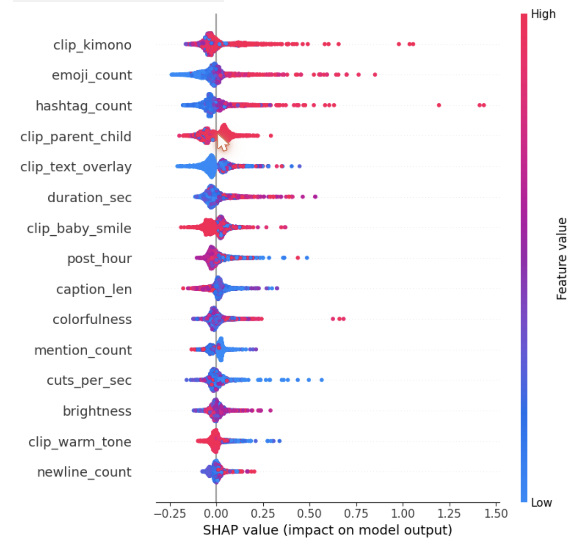
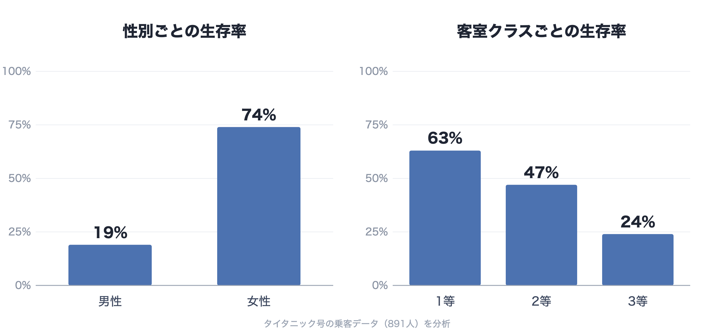
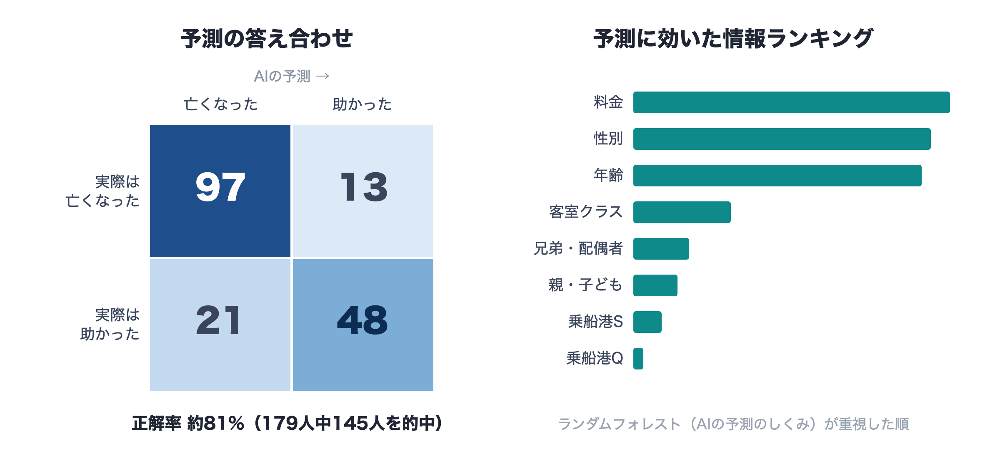

Instagramのライバル調べを自動化
毎朝、ライバル10アカウントの情報を自動で集めて、人気度を点数にし、表にまとめるまで全部自動。
📈 毎日10アカウントを自動チェック・失敗0回
01 — わたしのこと
AIづくりを学びながら、手を動かして形にしています。 「データを調べて先を予測する」ことから、 「毎日の作業がひとりでに回るしくみ」をつくることまで—— 頭で考えるだけで終わらせず、実際に動く形にすることを大切にしています。
結果を、見ただけでわかる数字とグラフにして伝えます。
一回きりの作業で終わらせず、毎日ひとりでに動くしくみにします。
AIを相棒にして、考えるところから作り上げるところまで一緒に進めます。
02 — できること
03 — つくったもの
クリックすると、くわしい内容が見られます。作ったものは少しずつ増やしていきます。

毎朝、ライバル10アカウントの情報を自動で集めて、人気度を点数にし、表にまとめるまで全部自動。
📈 毎日10アカウントを自動チェック・失敗0回

どんな編集の動画が伸びるかをAIで予測。「カットの速さ」「大きな字幕」「つかみの長さ」「明るさ」が効果的だと分かりました。
📈 カギは「テンポ・字幕・つかみ・明るさ」

フォトスタジオの投稿が伸びる条件をAIで予測。「着物」「親子ショット」「赤ちゃんの笑顔」が効果的だと分かりました。
📈 カギは「着物・親子ショット・笑顔」
作ったものを、そのまま開ける1つのファイルに書き出す道具を自作。資料づくりを自動にしました。

性別・部屋のランクで生存率がどう変わるかをグラフで分析。
📊 女性の生存率74%・男性19%

答え合わせの結果と、予測に効いた情報のランキングをグラフで確認。
📊 正解率 約81%・カギは「料金・性別・年齢」
04 — すすめ方
自動にしたい作業や、解きたいことをはっきりさせる。
AIと一緒に手を動かして、実際に動くものにする。
実際に動かして確かめ、結果を数字で見ながらよくしていく。